119
119
119
In the Land of Kerala
Kerala is well endowed with natural beauty. Hills, rivers,
backwaters, coastlines, diverse plant and animal life, and
moderate climate are the special features of Kerala.
Read these lines of Sri. S K Pottekkatt, an eminent writer,
describing the beauty of Kerala.
Paddy fields of emerald green
Blankets the vast interiors,
The green lushy valleys,
The mesmerizing ponds in bloom,
The sparklers lit night
And the divinely pure moon!
O my Kerala, how flutters my heart
To hear thy dear name just mentioned!
(Unpublished translation)
tIc-f-ta, \ns‚tbma-\-t∏¿ tIƒs°
tImƒabn¿ sIm≈p-s∂-∂p≈sa∂pw
\ocmfn∏® hncn® hb-ep-Iƒ
\osf°nS-°p-apƒ \mSp-Ifpw
hmcnfw ]p√-Wn-°p-∂n≥ ]pd-ßfpw
t\c‰ \oc-e¿s∏m-bvI-Ifpw
]qØncn IØn® ]mXn-cmhpw ]ns∂
]qØn-cp-hm-Xnc∏q\n-emhpw
Page 39
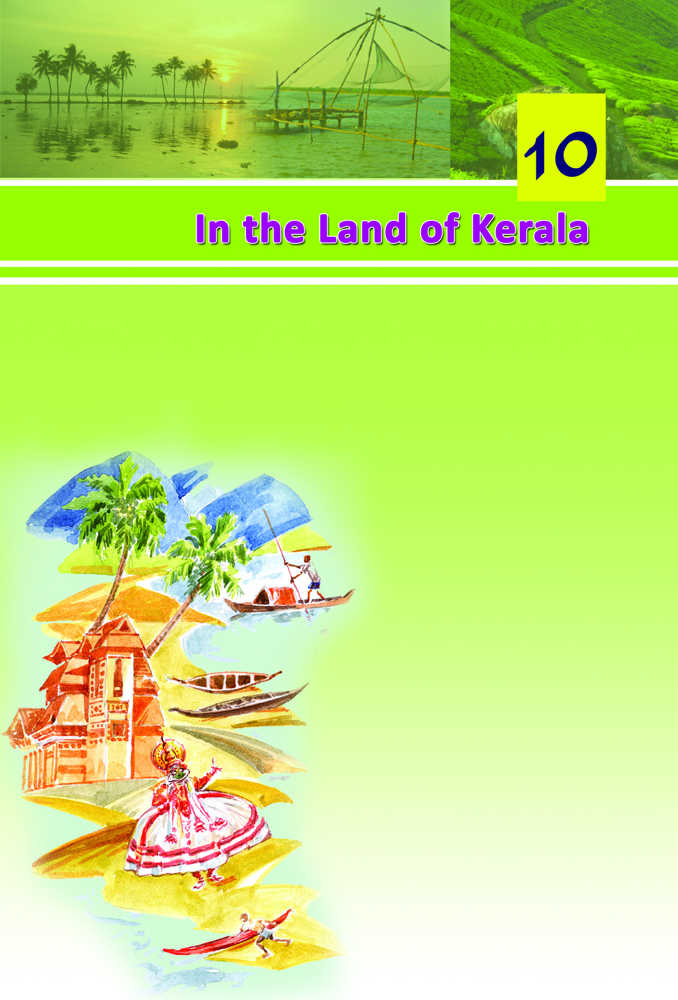
Page 40
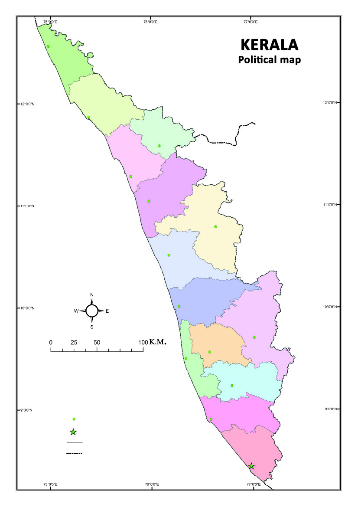
120
120
120
Social Science V
Don't you wish to know more about our beautiful state?
Kerala is located in the southern part of India between the
Western Ghats in the east and the Arabian Sea in the west.
Observe the given map (Fig. 10.1)
Fig : 10.1
Karnataka
Kasaragod
Kasaragod
Kannur
Kannur
Wayanad
Kalpetta
Kozhikkode
Kozhikkode
Malappuram
Malappuram
Palakkad
Palakkad
Thrissur
Thrissur
Ernakulam
Ernakulam
Idukki
Painavu
Kottayam
Kottayam
Alappuzha
Alappuzha
Pathanamthitta
Pathanamthitta
Kollam
Kollam
Thiruvananthapuram
Thiruvananthapuram
L a k s h a d w e e p s e a
Tamil Nadu
Index
District headquarters
State headquarters
District boundary
State boundary
Page 41
121
121
121
In the Land of Kerala
•
Which are the neighbouring states of Kerala?
•
How many districts are there in Kerala?
•
Which is the smallest district in Kerala?
•
Identify the districts that do not have a coastline.
•
Prepare more questions based on this map. Write down the
answers in your notebook. A quiz programme may be
conducted in your class with the questions you have prepared.
Physiography
The physiography of our state extends from the sandy stretches
along the Arabian Sea in the west, through hills and valleys, to
the torrenting streams and lofty peaks in the east.
Based on the elevation from sea level, the physiography of
Kerala can be divided into three.
Observe the given map (Fig. 10.2) and list out the physiographic
divisions of Kerala.
•
Highland
•
•
Highland
Page 42
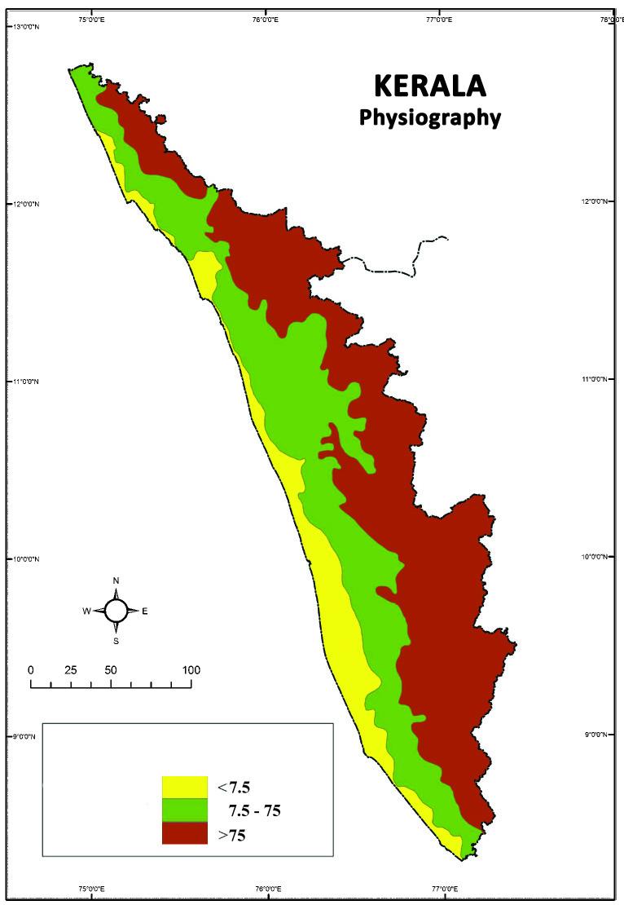
122
122
122
Social Science V
Fig. 10.2
Karnataka
L a k s h a d w e e p S e a
Tamil Nadu
Index
Lowland
Midland
Highland
m
m
m
K.M.
Page 43
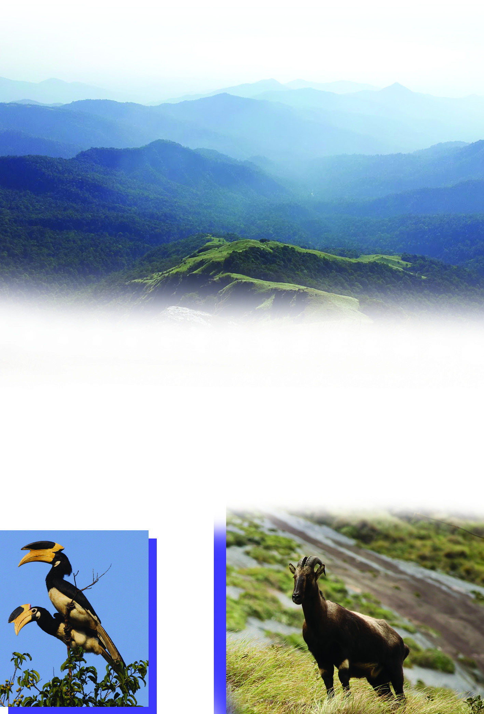
123
123
123
In the Land of Kerala
Highland is the area with an elevation of over 75 metres from
the sea level. All our rivers originate from this physiographic
unit composed of lofty mountains and hills. Most of this region
is covered with forests.
In the lap of the Sahya
The highland region of Kerala is part of the Western Ghat
mountain ranges which extend from Tamil Nadu in the south
to Gujarat in the north. The Western Ghats is the abode of a
wide variety of animals including tiger and leopard, different
types of birds and butterflies, reptiles like king cobra, and
rare species like the nilgiri tahr and the lion-tailed macaque.
Malabar Hornbil
Malabar Hornbil
Nilgiri Tahr
Nilgiri Tahr
Page 44
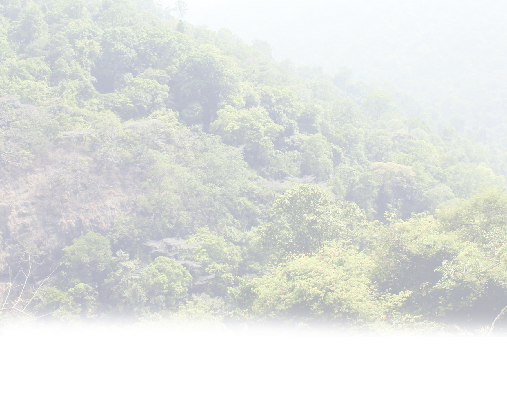
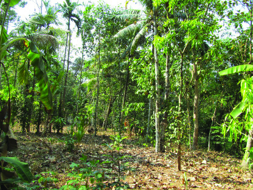
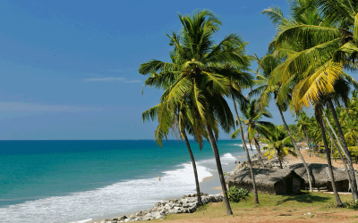

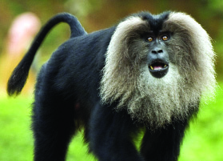
124
124
124
Social Science V
The Western Ghat region
is also home to trees such
as rosewood, eaglewood,
sandalwood, red sandal
wood and orchids of
different
kinds.
This
region is also known as the
Sahyadri mountain range.
Collect the pictures of the
flora and fauna in the
Western Ghats from the
internet and prepare a
digital album in the
computer of the Social
Science lab.
Midland
The midland includes
areas lying between an
elevation of 7.5 metres and
75 metres above the sea
level. The midland zone
consists of small hills,
valleys and river basins.
Identify from the map the
physiographic
units
bordering the east and the
west of the midland.
Lowland
The lowland is the area that
has an elevation upto 7.5
metres from the sea level.
Generally this is a sandy
tract.
In the valley of silence...
Silent Valley
is a forested
tract in the
W e s t e r n
Ghat region of the Mannarkad taluk
in Palakkad district. 'Silent Valley'
owes its name to the perceived
absence of noisy cicada. This forest
is the habitat of several plant and
animal species including the
endangered lion-tailed macaque.
Page 45
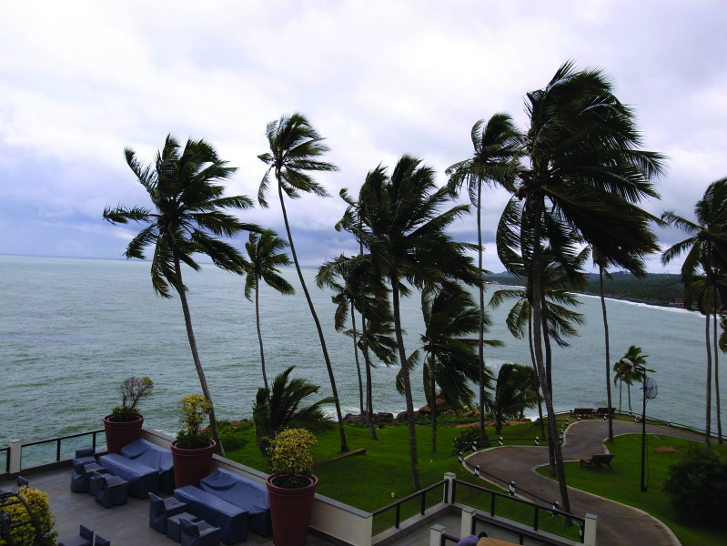
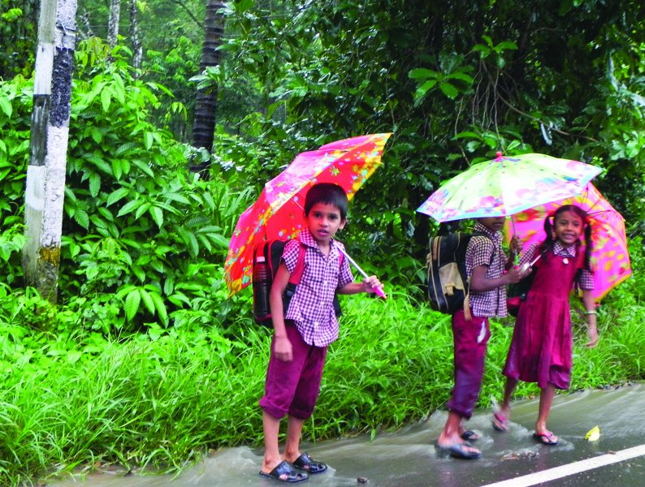
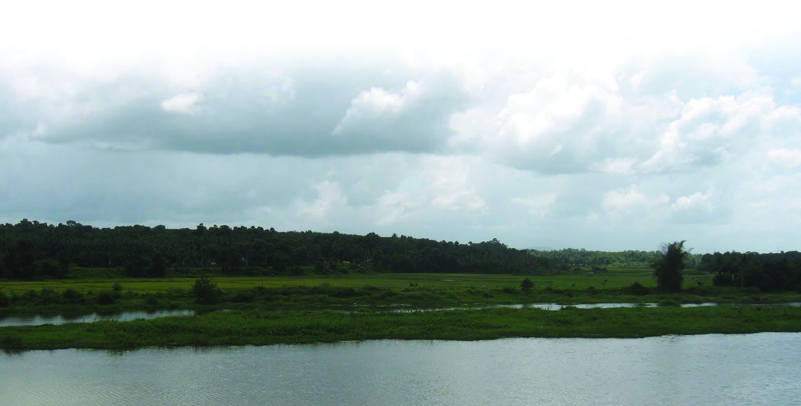


125
125
125
In the Land of Kerala
Climate
Kerala experiences a moderate
climate. Nearness to the sea is
the main reason for a climate
which is neither too hot nor too
cold in Kerala.
Kerala receives the
highest amount of
rainfall during the
south west monsoon
season which begins
in June. It is known
as Edavappathi or
Kalavarsham.
The north east monsoon
is known as Thulavarsham. Evening showers accompanied by
thunder is the peculiarity of Thulavarsham.
During which months is Thulavarsham experienced in
Kerala?
By the end of December, a slightly cooler climate is experienced
in Kerala. The summer season begins by the middle of February.
What features of summer are experienced in your locality?
•
Decrease in the flow of water in rivers.
•
Page 46
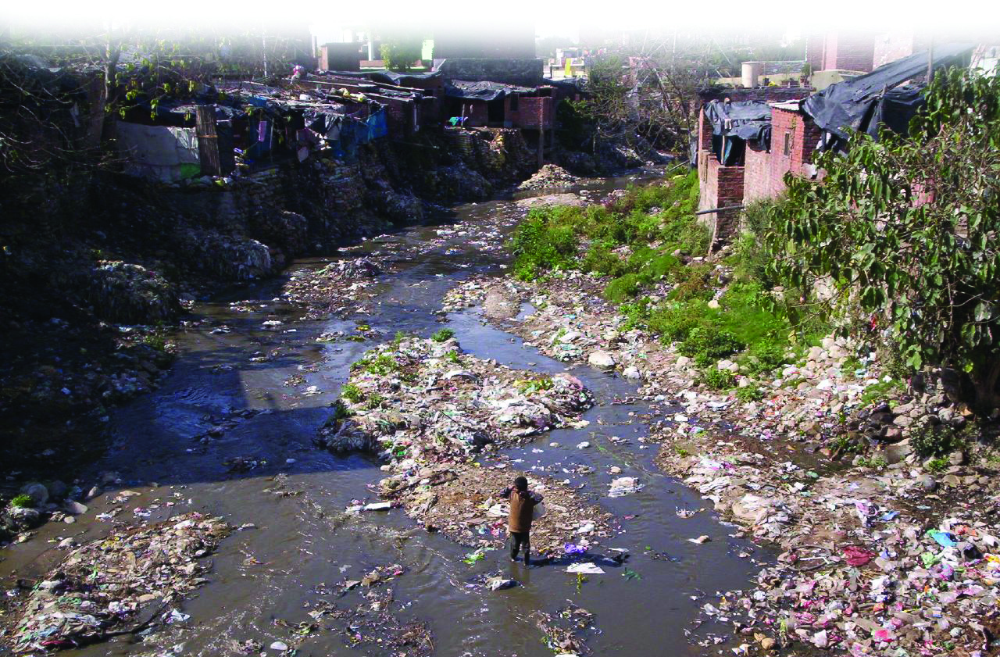
126
126
126
Social Science V
Rivers
There are 44 rivers originating from the Western Ghats and
flowing through Kerala. Of these, the Kabani, the Bhavani,
and the Pambar flow towards the east. The Periyar is the
longest river in Kerala.
Observe the maps in the Social Science lab and answer the
following questions.
•
Which are the rivers flowing through your district?
•
From which physiographic division do the rivers in Kerala
originate?
Write down the uses of rivers.
•
Drinking water
•
Look at the picture which shows the present state of our rivers.
Page 47
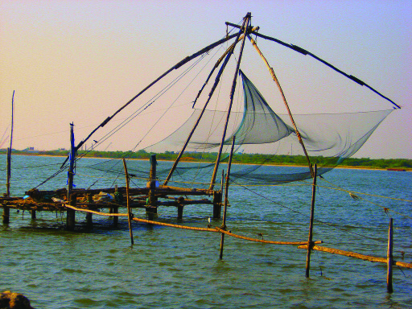
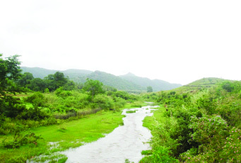

127
127
127
In the Land of Kerala
Today, the rivers in Kerala are under the threat of pollution.
Do the rivers in your locality face such a threat? List out the
other problems faced by the rivers in your locality.
•
Bank shelving
•
A revival
The Kodungarappallampuzha in
Attappadi which had dried up
twenty five years ago, is in the
course of regaining its flow. The
Kodungarappallampuzha is a
tributary of the Bhavani river
originating from Perumalmudi in
the Tamil Nadu border. Deforestation led to the degeneration of the
river. Aided by activities such as the construction of rainwater
percolation pits, check-dams and afforestation programmes, the river
has regained its flow through Attappadi.
Enquire about the problems faced by the rivers in your locality
and prepare notes.
Though Kerala has numerous rivers, many places face
acute water shortage during summer. Why?
Backwaters are large
waterbodies located
close to the sea. The
Vembanattu Kayal spread
across the districts of
Alappuzha, Kottayam,
and Ernakulam, is the
largest backwater in
Backwaters
Page 48


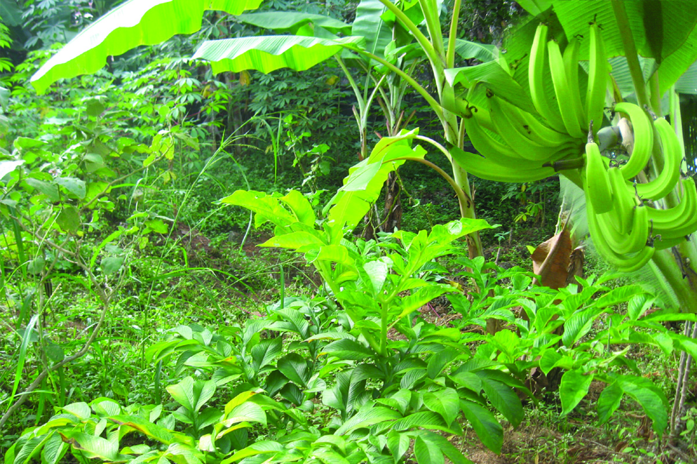
128
128
128
Social Science V
Kerala. The backwaters are utilized for fishing, shell mining,
coir industry, and tourism.
Lakes
Lakes are large waterbodies located close to the sea. The
Sasthamkotta lake in Kollam district is the largest freshwater
lake in Kerala.
Backwaters and lakes face several problems. List them
out.
• Dumping of industrial waste
•
The rivers, lakes, and backwaters are closely related to the life
of Keralites. Many of the historically and culturally important
places are located along the river banks. Shouldn't these water
bodies which are closely linked to our culture be conserved?
Agriculture and human life
Kerala is an agricultural state. Fertile soil and abundant rainfall
make Kerala favourable for agriculture.
Coconut and paddy are the main crops in the coastal region.
The backwaters here are widely used for pisciculture.
Page 49
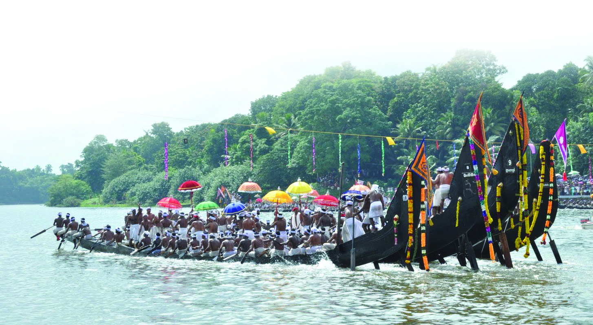
129
129
129
In the Land of Kerala
But in the midland diverse crops can be found. Besides paddy,
coconut, plantain, elephant yam, butter yam, and arecanut,
rubber, tapioca, coffee, and pepper are grown in this region.
The cool climate of the highland is ideal for tea, cardamom,
and pepper.
Do you know that Onam, the regional festival of Kerala, is
connected with the harvest in the month of Chingam? The
arrangement of Kani on Vishu and planting of saplings on
Pathamudayam emphasize the role of agriculture in Kerala's
culture.
These festivals become relevant only if our crop diversity and
agrarian culture are preserved.
Collect proverbs associated with agriculture.
Page 50

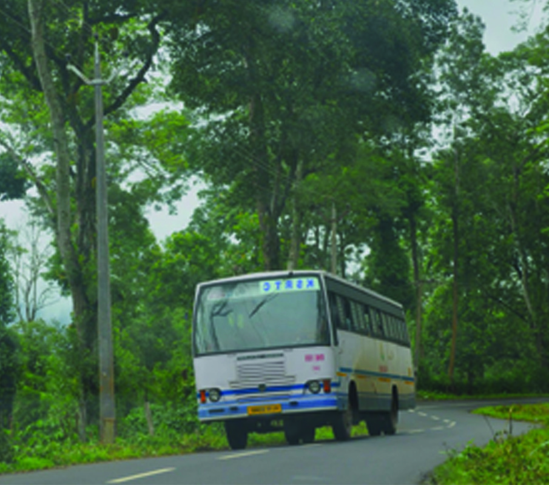
130
130
130
Social Science V
The vanishing crop diversity
Nowadays Keralites cultivate industrially significant crops like
rubber instead of traditional crops. Now, many educated
people are attracted towards non-agricultural jobs. Lack of
interest in cultivating traditional crops is another issue in
Kerala. Isn't it be changed? Discuss.
What are the agricultural produce used to prepare
food in your home? Classify these into those cultivated
in your state and those coming from others.
My courtyard farm
Cultivate in your courtyard and in your school campus. It is a
delightful experience to produce the vegetables and paddy
needed for our consumption.
What are the merits of it?
•
Poison-free vegetables
•
Transport
In Kerala the modes of transport have developed in accordance
with the physiographic divisions. Water transport is of great
importance in the lowlands marked with backwaters, lakes,
and river mouths. We have an inland waterway leading from
Thiruvananthapuram
to
Hosdurg. Ports for the purpose
of fishing, transport, defence,
etc. have also been developed.
As bridges were constructed
across the backwaters, railway
lines and national highways
developed in Kerala. Road
transport is prominent in the
midlands and highlands. These
Page 51
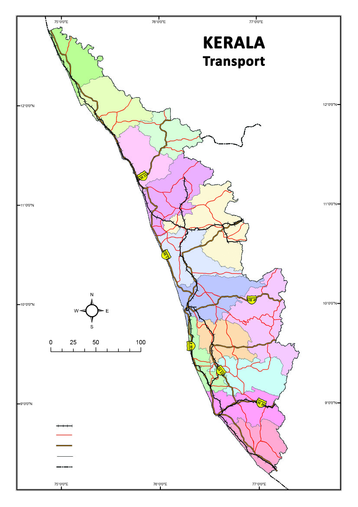
131
131
131
In the Land of Kerala
Figure 10.3
Kasaragod
Kannur
Wayanad
Kozhikkode
Malappuram
Palakkad
Thrissur
Ernakulam
Idukki
Kottayam
Alappuzha
Pathanamthitta
Kollam
Thiruvananthapuram
Karnataka
L a k s h a d w e e p s e a
Tamil Nadu
Railway
Idex
District boundary
State highway
National highway
State boundary
K.M.
roads extend to Tamil Nadu and Karnataka through the passes
in the Western Ghats.
Air transport to different parts of the country as well as to
several foreign countries operate from the international airports
in Thiruvananthapuram, Kochi and Kozhikode in Kerala.
Observe the map (Fig. 10.3).
Page 52

132
132
132
Social Science V
•
Identify the districts with no railway lines. What could be
the reason for this?
•
Which physiographic division has the maximum length of
National Highways? Why is it so?
Gods own country
Kerala is endowed with abundant rainfall, numerous rivers,
pleasant climate, highly literate and cultured society and a
physiography of green mountains and hills. It is our duty to
conserve the rich resources and diversity of Kerala for
generations to come. Let us unite in this mission.
The learner can:
•
describe the location, boundaries, and districts of Kerala.
•
explain the physiography of Kerala.
•
analyse the importance of the Western Ghats.
•
prepare an album of flora and fauna in the Western Ghats
with proper captions.
•
infer on the climate of Kerala.
•
illustrate the origin and course of the rivers in Kerala.
•
analyse the problems faced by rivers.
•
express in different modes the value of conservation of
rivers and backwaters.
•
Kerala is a state located at the southern part of India on
the shores of the Arabian Sea.
•
Kerala consists of three distinct physiographic divisions,
namely, the highland, the midland and the lowland.
•
The alternating rainy and summer seasons provide
favourable conditions for diverse crops.
•
Kerala has an agro-based culture.
Summary
Significant learning outcomes
Page 53

133
133
133
In the Land of Kerala
•
make inferences on Kerala's culture is agro-based.
•
analyse the different modes of transport developed in
Kerala in accordance with the topographical peculiarities.
1.
'Crops cultivated in Kerala are in accordance with its
physiography'. Write a few examples justifying the
statement.
2.
The rivers in Kerala face several problems. Prepare notes
on the problems faced by the rivers in your locality.
3.
What are the climatic features of Kerala?
4.
The eastern zone of Kerala does not have rail transport.
Why?
Prepare a model of the physiography of Kerala using cardboard
and clay.
Materials required
Cardboard (Size 30 cm × 30 cm)
Clay
Pencil
Water colour
Marker pen
Draw the outline of Kerala on the cardboard of the size 30 cm
× 30 cm. Make the model of Kerala using clay on the cardboard.
Give suitable colours to the different physiographic divisions.
Label the physiographic divisions as 'highland', 'midland' and
'lowland'.
Let us assess
Extended activities